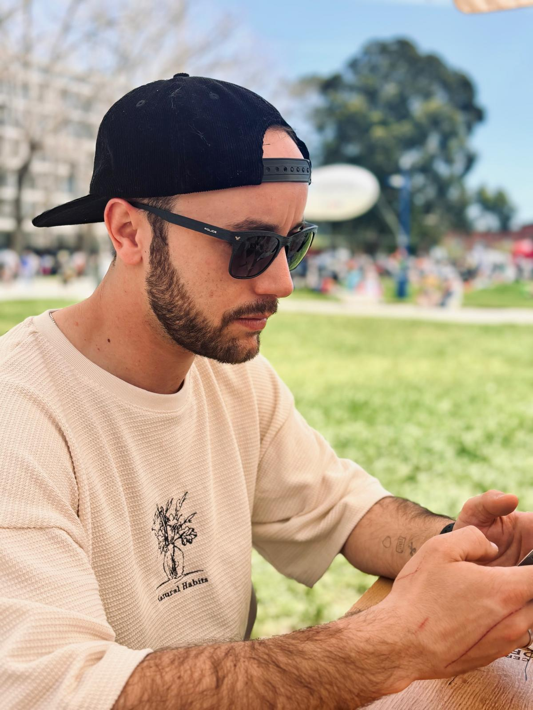
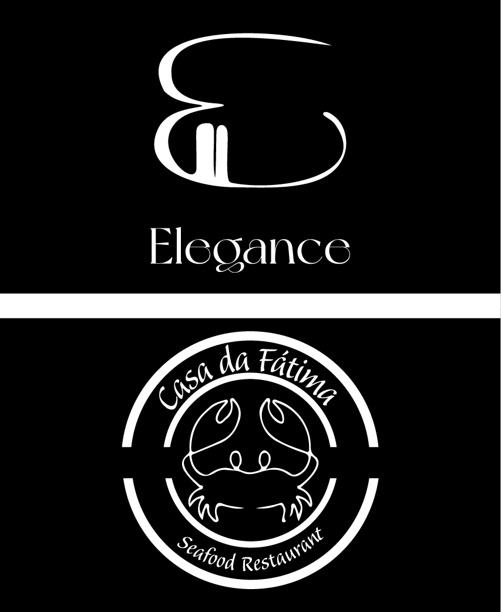
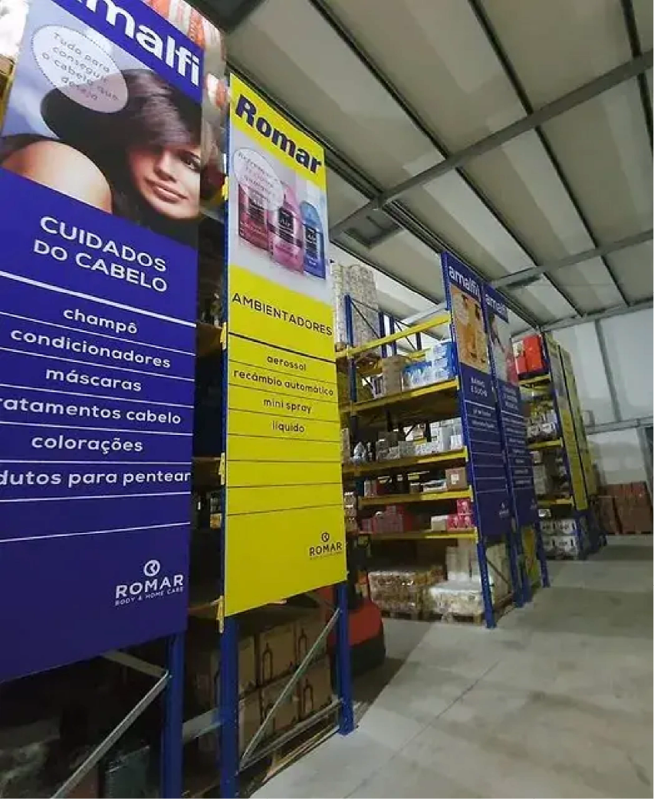
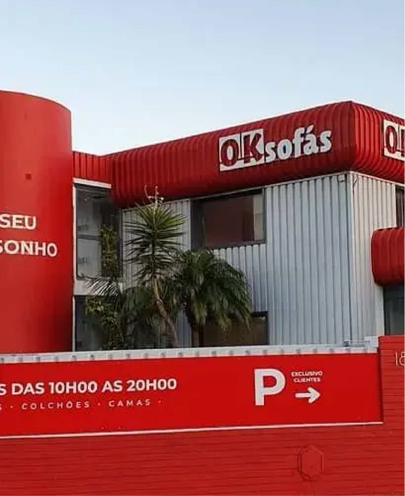

Perfil
Profissional dedicado, organizado e com facilidade em lidar com clientes e trabalho em equipa.
Publicidade • Produção gráfica • Desenvolvimento Web
Trabalho nas áreas da publicidade, produção gráfica e desenvolvimento web, com foco em soluções práticas, boa execução e atenção ao detalhe.

Sobre mim
Ao longo do meu percurso profissional ganhei experiência nas áreas da publicidade, pré-impressão, produção gráfica e atendimento ao cliente. Já trabalhei tanto na parte técnica da preparação de ficheiros como no contacto direto com clientes, acompanhamento de encomendas e organização do trabalho em produção.
Gosto de manter tudo bem organizado, cumprir prazos e encontrar soluções práticas para cada necessidade. Tenho facilidade em adaptar-me a diferentes desafios e procuro sempre aprender mais para evoluir profissionalmente e contribuir de forma positiva para a equipa.
Profissional dedicado, organizado e com facilidade em lidar com clientes e trabalho em equipa.
Continuar a crescer, ganhar mais experiência e acrescentar valor através de um trabalho sério e consistente.
Competências
Tenho experiência em gestão de clientes, preparação de trabalhos para produção, acompanhamento de processos gráficos e utilização de várias ferramentas digitais. Trabalho com foco na qualidade final, no cumprimento de prazos e na resposta às necessidades de cada cliente.
Experiência profissional
Técnico de Publicidade / Pré-impressão
Desempenhei funções ligadas à preparação de ficheiros, apoio à produção e execução de materiais publicitários. Este trabalho permitiu-me desenvolver atenção ao detalhe, sentido de responsabilidade e conhecimentos técnicos importantes na área da impressão e produção gráfica.
Gestor
Assumi responsabilidades ao nível da gestão de produção, contacto com clientes, acompanhamento de pedidos e organização do trabalho diário. Foi uma experiência importante para reforçar competências de comunicação, coordenação e resolução de problemas, sempre com foco na satisfação do cliente e na qualidade do serviço prestado.
Projetos
Alguns exemplos de trabalhos desenvolvidos na área da publicidade e produção gráfica, com foco na qualidade, funcionalidade e impacto visual.

Desenvolvimento de identidades visuais e logótipos com atenção à simplicidade, legibilidade e impacto visual.

Produção e aplicação de soluções de sinalética para espaços interiores, com foco na funcionalidade e apresentação.

Desenvolvimento, produção e aplicação de reclames publicitários adaptados à necessidade e imagem de cada cliente.
Contacto